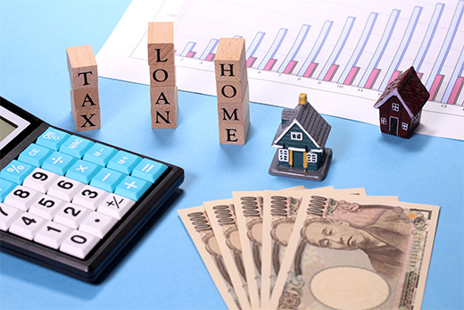

競売になる前に「任意売却」という選択を

「住宅ローンを滞納してしまった」「裁判所から競売開始の通知書が届いた」。こうしたお悩みをお抱えの方は、できるだけ早く任意売却をご検討ください。競売よりも有利な条件で売却を行うことで、生活再建に大きな余裕が生まれます。こちらでは、小山市のマイハウスが任意売却の基礎知識をご紹介します。
任意売却とは？ メリットは？
住宅ローンを使ってマイホームを購入した場合、その不動産には金融機関によって「抵当権」が設定されます。そして、何らかの事情によりローン返済が滞ってしまうと、抵当権に従い金融機関が不動産の差し押さえを行い、最終的には競売にかけられてしまいます。こうなる前に、債権者と債務者の合意に基づいて不動産売却を行い、債務整理をするのが「任意売却」です。競売は市場価格よりも3〜5割程度安い価格で不動産が売買されてしまいますが、任意売却であれば一般的な不動産売却を同価格帯での売却が実現できます。
任意売却は早めが大切
任意売却は、競売を避けられるというメリットを持つ有益な方法です。しかし、実施は“競売が開始される前”でなくてはなりません。以下は、任意売却が可能な期間です。
※表は左右にスクロールして確認することができます。
| 時期 | 状況 | 任意売却の可否 |
|---|---|---|
| ローン滞納前 | まだ滞納は避けられているものの、住宅ローンの支払いが厳しい状況。早めの対策が大切です。 | ◎ |
| 滞納3カ月前 | ローンを滞納したことで金融機関から督促状や一括弁済通知が届きます。このまま放置すると、競売にかけられてしまいます。 | ○ |
| 滞納4カ月前 | 競売開始通知が届きます。この後、4〜5カ月で競売が行われます。 | ○ |
| 滞納5カ月前 | 競売開始目前。裁判所から競売の執行員が訪問し、写真撮影などの調査が実施されます。また、不動産関係者が訪問することもあります。 | △ |
| それ以降 | 競売が開始されます。この時点で、もう任意売却は行えません。 | × |
競売と任意売却の比較
より具体的に、競売と任意売却の違いを見ていきましょう。いくつかの項目を、それぞれ比較していきます。
※表は左右にスクロールして確認することができます。
| 項目 | 競売 | 任意売却 |
|---|---|---|
| 売却価格 | 市場価格に比べて3〜5割程度の価格で売却される可能性がある。 | 市場価格に近い価格で売却できる可能性がある。 |
| 残債 | 売却価格が低いため、多くの残債が残る可能性がある。 | 競売に比べて高く売れるため、残債を減らせる。 |
| 返済 | 競売後にも現在の無理な支払いが続く可能性がある。 | 残債の返済方法を交渉でき、合意ができれば無理のない分割返済が行える。 |
| プライバシー | 新聞や広告、ネットに競売情報が公開されるほか、執行員や不動産会社関係者の訪問により周囲に状況が知られる可能性がある。 | 秘密厳守で進められるため、周囲の人に状況を知られないまま売却を実現できる。 |
| 立ち退き | 落札者の都合により、立ち退きを強制されることがある。 | 事前の協議・交渉が可能なため、強制立ち退きに遭うことはない。 |
| 引っ越し費用 | 引っ越し費用の捻出は難しい。 | 交渉次第では、引っ越し費用を残せる可能性がある。 |
| 生活再建 | 原則、裁判所のペースで競売が進むため、生活再建の計画が立てにくい。 | 準備金などを手元に残せることもできるので、生活再建の目処が経ちやすい。 |
任意売却後にも自宅に住めるリースバック
任意売却後は原則、現居から引っ越さなくてはなりません。しかし、仕事やお子さんの学校の関係で、できれば転居を避けたいという方もいらっしゃいます。そこでおすすめなのがリースバックです。これは、自宅をいったん購入者（当社もしくは第三者）へ売却し、その後購入者から賃貸するという方法です。ただし、賃貸なので安定した収入や連帯保証人の条件、賃貸保証会社への加入といった条件が課される場合があります。
なお、事前に買戻しの特約を取り決めておくと、5年以内を目安に買戻しが可能です。将来的には収入が回復する、購入資金の目処が立つなどの見込があれば、ぜひご検討ください。